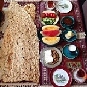
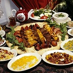

Menu
Breakfast
A basic Iranian breakfast includes of a variety of flat breads, white cheese, butter cubes, whipped heavy cream (often sweetened with honey), and a variety of fruit jams and spreads. It could also include things like walnuts, tomatoes, and cucumbers.

Lunch & Dinner
Traditional Iranian cooking is done in stages, sometimes needing hours of preparation. Most meals include rice, herbs, cheese, flat breads, and some type of meat like chicken, beef, lamb, or fish. Stew over rice is a very popular dish in many places within Iran.